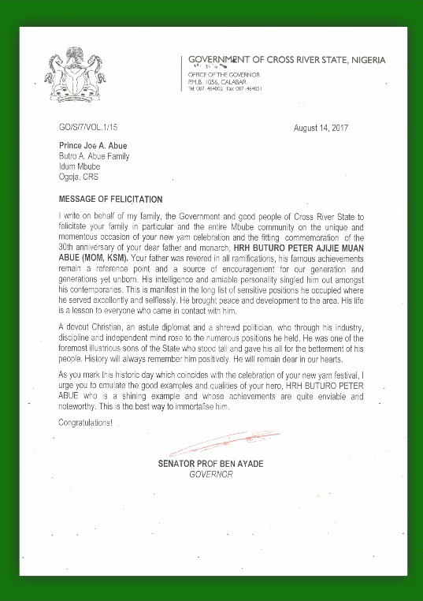

Below you will see a copy of the letter sent from Sen. Prof. Benedict Ayade, Governor of Cross River State, to Prince Joe Aras Abue, the greater Abue family, and the people of Mbube in commemoration of the late HRH Buturo P. M. Abue. The full text is also reproduced below.
I write on behalf of my family, the Government and good people of Cross River State to felicitate your family in particular and the entire Mbube community on the unique and momentous occasion of your new yam celebration and the fitting commemoration of the 30th anniversary of your dear father and monarch, HRH BUTURO PETER AJIJIE MUAN ABUE (MON, KSM). Your father was revered in all ramifications, his famous achievements remain a refernce point and a source of encouragement for our generation and generations yet unborn. His intelligence and amiable personality singled him out amongst his contemporaries. This is manifest in the long list of sensitive positions he occupied where he served excellently and selflessly. He brought peace and development to the area. His life is a lesson to everyone who came in contact with him.
A devout Christian, an astute diplomat and a shrewd politician, who through his industry, discipline and independent mind rose to the numerous positions he held. He was one of the foremost illustrious sons of the State who stood tall and gave his all for the betterment of his people. History will always remember him positively. He will remain dear in our hearts.
As you mark this historic day which coincides with teh celebration of your new yam festival, I urge you to emulate the good examples and qualities of your hero, HRH BUTURO PETER ABUE who is a shining example and whose achievements are quite enviable and noteworthy. This is the best way to immortalise him.
Congratulations!
Senator Prof Ben Ayade
Governor